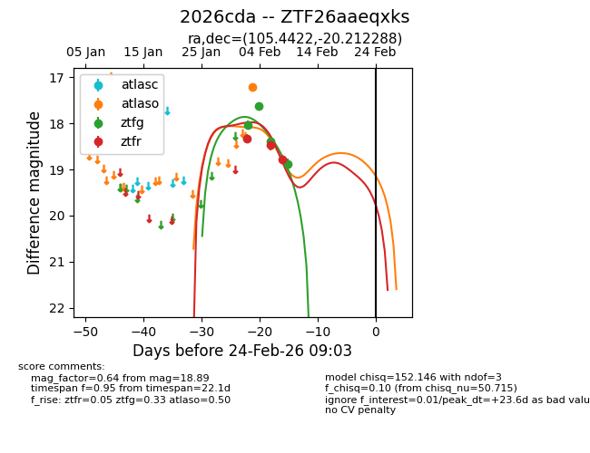
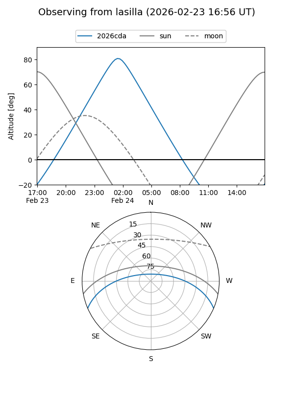
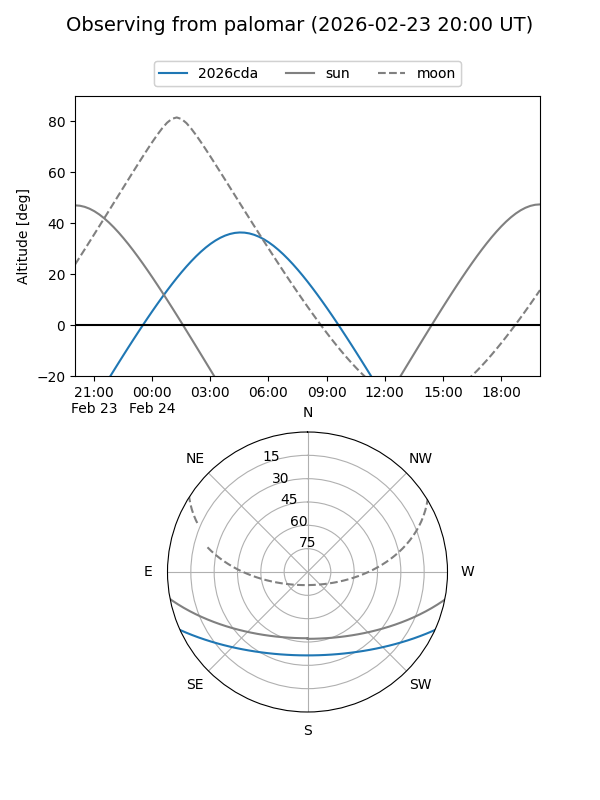
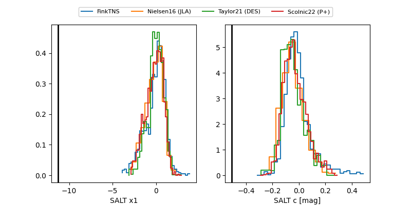

2026cda
Target 2026cda at 2026-02-24 09:08
Aliases and brokers:
FINK: link
Lasair: link
ALeRCE: link
TNS: link
YSE: link
alt names
ZTF26aaeqxks (ztf,fink_ztf)
2026cda (tns,yse)
Coordinates:
equatorial (ra, dec) = 105.4422,-20.21229
equatorial (HMS+DMS) = 07:01:46.12,-20:12:44.24
galactic (l, b) = (232.1489,-6.88678)
Flags:
Photometry:
last atlaso=17.22, ztfg=18.89, ztfr=18.78
1 atlaso, 4 ztfg, 3 ztfr detections
Lightcurve

Visibility


Additional plots
